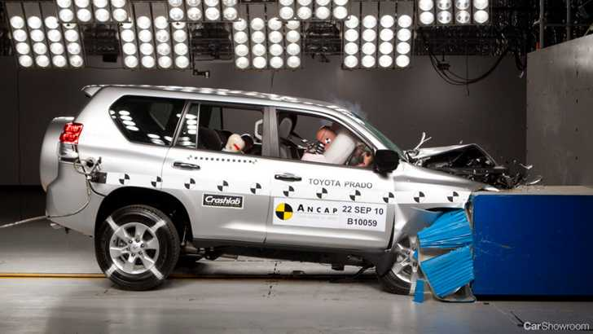

| Home | About us | Brands | Suvs | Sedans | Vans | Sports & Hatchbacks | Contact us |
Toyota Prado 2017
The Toyota Prado contrasts sharply from the current crop of SUVs. While big family SUVs are becoming increasingly urbanised, the Prado continues to toe the line between on-road and off-road prowess, being impressive no matter the surface. This isn’t an SUV that will falter at the first sign of mud, or run scared from anything that doesn’t resemble tarmac. This is a car that will go where you point it, and not stop until you get there. Not only is it immensely capable, it also looks good (sort of), and offers seating for seven full-sized adults (provided they don’t complain too much and know how to fold themselves to get in the back). A recent revision saw the retirement of the old 3.0-litre turbodiesel we’ve come to love, and in its place, a 2.8-litre oiler that offers far more refinement than any diesel should. We take a look at the Toyota Prado, the best-selling large SUV of the past two decades.A redesign in 2013 saw the Prado take on a far more distinctive face than ever before, giving it some aesthetic breathing room between itself and the bigger Land Cruiser 200. The wheel arches on this thing are of almost comical proportions, and along with the tall ride height, the Prado looks as rugged and ready as any modern SUV can get. Higher-spec models like the VX get full-LED headlights with bright-as-anything LED daytime running lights, which meld smoothly into the 5-bar cascading grille. This thing has presence by the truckload, which is certainly no bad thing. The profile of the Prado is dominated by its big wheels and bigger wheel arches, while the rear makes its off-road intentions known with a full-sized spare wheel mounted on the tailgate. ‘Altitude’ special editions hide the spare underneath the car, though that requires the deletion of the secondary fuel tank, reducing fuel capacity from 150L(!) to 87L.
There are two engines on offer for the Toyota Prado, a 2.8-litre turbodiesel, and a 4.0-litre petrol. The most popular engine choice (by the biggest margin we’ve ever seen) is the oiler, with 130kW of power and 450Nm of twist. This engine was introduced in September 2015, taking over duties from the 3.0-litre oiler the Prado used to sell best with, and claims to use a hair under 8.0L/100km on the combined cycle. This is the engine best suited to the Prado and its driving dynamics, offering great capability off-road and lots of torque on-road. The other engine on offer is the V6 petrol. Its enormous size means inflated fuel consumption, with the official rating standing at 11.6L/100km. In the real world, the petrol V6 is capable of getting close to the fuel consumption of the diesel (but never outdoes it), though the petrol becomes ravenous in urban conditions.
The Prado’s interior balances form and function, though there’s decent argument on where it places more emphasis. Sure, the new Prado is more plush than it’s ever been, but it’s still some way off similarly-priced or similarly-packaged rivals. That said, if you prefer a whiff of tractor in your SUV, this won’t be much of a gripe to you. What may be an annoyance are the placement of switchgear, with a somewhat haphazard layout that will leave the unfamiliar a little confused during the first few interactions. Thankfully, the gains in pliancy and comfort make up for this to some extent. The front pews are incredibly accommodating and pliant, while there’s acres of space in the second row that are just as comfortable. The third row of seats are surprisingly roomy despite the occasional use they’ll see, with adults able to weather short journeys with little discomfort. Getting there isn’t particularly graceful, though we argue that it never really is. The cabin is serviced by several large cubbies dotted around the cabin, and space behind the third row is decent. Space expands further if you fold the rearmost two seats, which can be done electrically on some models, and luggage rails in the boot mean little issue organising your cargo once it’s in there. The cargo door swings sideways rather than upwards, making loading particularly difficult, though models without the exterior spare wheel offer a flip-up rear windscreen which is ideal when loading or accessing small items in the boot.
The Prado suffered from a lack of refinement for some time, thanks largely to the clattery diesel engine that used to live under the bonnet. While the new 2.8-litre might only offer a 3kW/40Nm rise over the outgoing car, its remarkably smooth and quiet, and not just for an oiler. While the engine itself is now more quiet, the Prado now packs increased sound dampening in the engine bay to keep the noise low, and you can only really tell it’s a diesel if you “rev the bejesus out of it.” The updated engine brought with it an updated automatic gearbox, now with 6-forward ratios as opposed to just 5. As a result, the Prado is now a more accomplished motorway cruiser, able to keep to the speed limit with less effort and fewer revs. The softly-sprung suspension means it soaks up bigger undulations with ease, though the ladder-frame the Prado is built on means that corrugation will see the big Toyota fidget more than unibody (or monocoque) rivals. Through the bends, the Prado isn’t a revelation, with decent amounts of body roll to endure. It’s much improved over the outgoing model though, with the inclusion of a trick suspension setup called Kinetic Dynamic Suspension System available on VX models and upward, which stiffens the response of the swaybars automatically to improve on-road handling while disconnecting them for better wheel travel off-road. Off-road, the Prado truly shines, with ability and ease that outdoes everything else on the market by a healthy margin. Even compared to off-road stalwarts like the Land Rover Discovery, the Prado makes minced meat of even the toughest terrains, with more off-road driving aids than you’d ever really need. That in mind, if you’re worried that the current crop of big family wagons might not be able to handle your demanding commute, the Prado should rank highly on your list.

The Prado may be agricultural by design, but it certainly understands the demands of the modern buyer. Packing seven airbags and a reversing camera as standard, the Prado makes a strong case for itself as a family wagon, as any seven-seater should. Helps that the Prado’s inherently-strong structure will shrug off most collisions, as most ladder-frame SUVs do. The Prado Kakadu range-topper throws in significantly more safety kit, though. A ‘Pre Crash Safety System’ bundles in things like autonomous emergency braking, intelligent cruise control, and rear cross-traffic alert, though it’s disappointing that these features are not offered as options on lower-end models. Cabin convenience is well catered for, with even GXL models packing things like sat-nav, running boards, and rear parking sensors (which are a must-have provided that the spare-wheel is externally mounted, requiring guesswork when backing up without those sensors). There’s even tri-zone climate control, with the two front occupants able to have different temperatures, while maintaining another different temperature for the rest of the cabin.
There’s a very good reason why the Toyota Prado has had a chokehold on the buying public in Australia, sitting pretty as the best-selling SUV of its class for over two decades. It’s immensely capable off-road, respectable on-road, offers unbelievable reliability, and now packs the sort of refinement you’d expect of something current. With competitive pricing, the Toyota Prado makes a very compelling proposition, especially if your day-to-day requires the sort of off-road capability that the Prado offers as standard. The pick of the bunch is definitely the Prado VX diesel, which offers all the luxury appointments buyers in this segment would want from their big SUV, along with that gem of an oiler. However, special-edition Altitude models (sitting between GXL and VX grades) offer even better value, throwing in most of the luxury kit of the VX onto a model more closely-priced to the GXL. That said, if you need the enormous 150L fuel tank and the range it offers, the Altitude should be given a miss.